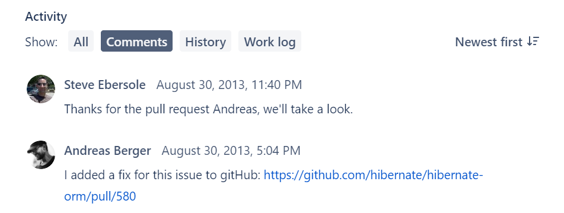
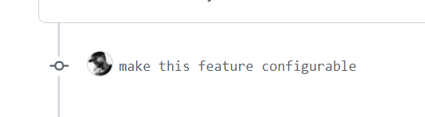
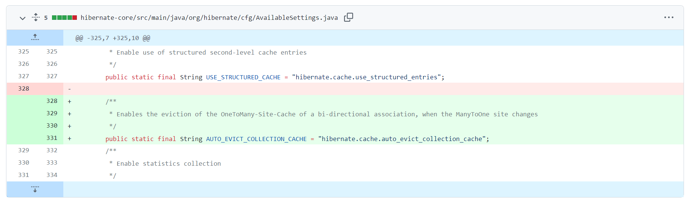

Hibernate 配置自动清除二级缓存之集合缓存
之前在项目上使用了 Hibernate，并开启了基于 caffeine 的二级缓存。因为 Hibernate 会自动处理缓存，所以一直没怎么关注。直到最近，发现在一种特定的情况下，Hibernate 不会自动清除二级缓存里面的集合缓存。问题最后解决起来其实很简单，增加一个配置项的事。不过问题寻求解决的过程还是蛮繁琐的，并没有人能够直接告诉这个问题的答案，在此记录一下这个问题的排查过程。
太长不看版：Spring Boot 中设置属性 spring.jpa.properties.auto_evict_collection_cache=true 即可解决。
一、问题出现
假定我这里有两个实体，分别为 Parent 和 Child。然后 Parent 与 Child 之间存在一对多的对应关系，即在 Parent 的实体中，存在一个属性 private Set<Child> children，然后我们开启二级缓存 @Cache(usage = CacheConcurrencyStrategy.READ_WRITE)。在这种情况下，我们先访问 Parent 实体并获取其中的 children 属性，确保其已被缓存。然后我们再单独操作 Child，我们新建一个 Child 对象 Child child = new Child() 并设置其 Parent 的值 child.setParent(parent) 并保存 Child 实体 ChildRepository.save(child)。然后我们回过来获取 Parent，会发现 Parent 的 children 的值仍为原数组对象， 没有我们新增的 child 对象。
通过在 Google 上进行搜索，发现 stackoverflow 上存在几个类似的问题，再进一步的搜索后，发现在 Hibernate 官方 Bug 追踪网站上有人归纳并提出了这个问题 automatic L2 collection cache eviction when an element is added/updated/removed，可以看到不只是自己遇到的新增，修改/删除也会有类似的问题。
二、问题解决
在上面链接的内容下方，问题提出者给出了一种 workaround 的方案，提供 @PostPersist、@PostRemove 及 @PreUpdate 的监听，并在监听中自动清理缓存。以及在之前查阅 stackoverflow 时，也有人认为，你需要在操作多方元素的时候，同时操作一方对应的集合，对其进行 add/remove 操作。
但不管怎么说，这些都是一些 workaround 方案，因为 Hibernate 本身是有能力自动处理这些事情的。话又说回来，既然问题很早就被提出了，比如这个链接中使用的版本是 3.3.1，同时官方也已经记录了这个问题已经在 4.3.0.Beta5 中被修复了，可是为什么我们还是会遇到这个问题？这个答案其实在下面的评论中。

点进链接是 GitHub 的 PR 请求，讨论中详细地记录了从贡献者提出 PR 到最后并合并的整个流程。看下来大概就是，贡献者向负责人解释了为了提出这个改动、有负责人担心是不是会影响性能并期望做成可配置的、贡献者支持了配置项、PR 最终被合并。所以问题已经很明了了，功能上是已经被修复了，但是因为做成了配置项，所以默认没有启用，我们需要手动启用这个特性。

所以我们从这里点进去，去看一下我们怎么才能打开这个特性。最后我们可以看到是在 hibernate-core/src/main/java/org/hibernate/cfg/AvailableSettings.java 这个文件中定义了配置的名字。

所以到这里，这个问题就算是最终解决了。
三、插曲
由于项目使用了 spring-boot-starter-data-jpa 依赖，所以这个配置项的设置并不是上面 Hibernate 的改动所提及的，于是继续在 Google 用 auto_evict_collection_cache 作为关键字进行搜索，寻找在 Spring Boot 中的配置方式。最终是得到了答案，Spring Boot 中的配置项为 spring.jpa.properties.auto_evict_collection_cache，不过在此之外还发现了一个小插曲。
Auto evict collection cache throws exception with null values 中描述了一个人开启了这个特性，然后在一个特定的情况下 Hibernate 会抛出异常。虽然这个问题很快就被解决了，不过现在回来想想，维护者在维护这种已经已经很庞大的项目时，对所有的改动都抱有谨慎的态度还是很有必要的。做成了配置项，虽然一方面会让很多不知道的人继续遇到这个问题，但同时也让很多无关的人避免了可能带来的新问题。所以这两种方案孰优孰劣，可能就见仁见智了吧。